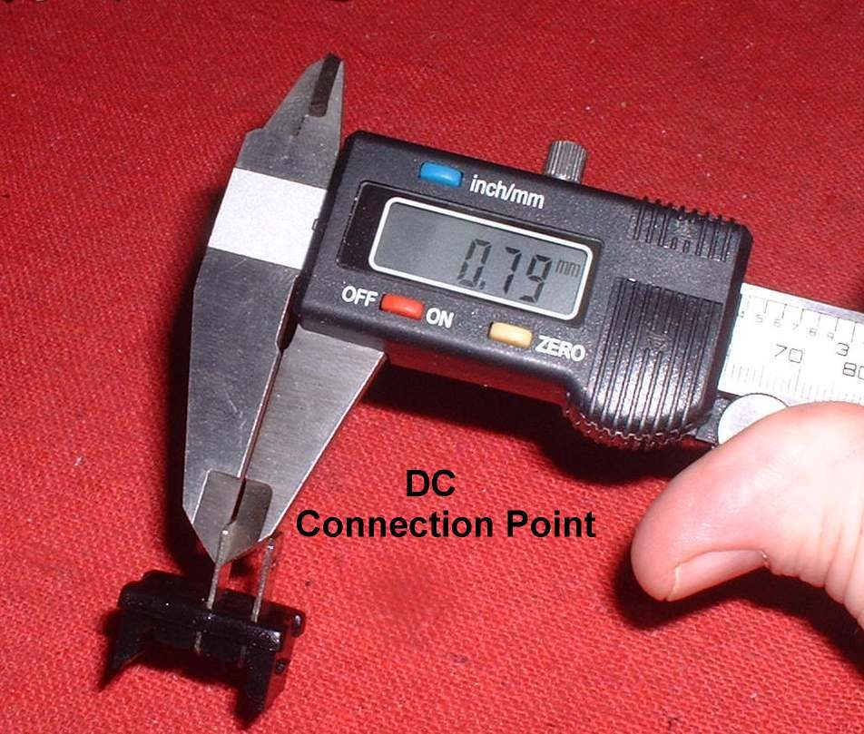

Mains-voltage (AC) household switches are cheap and easy to find, but they should not switch a bike's DC circuit. When a DC circuit is opened, the current keeps arcing across the contact for longer than on AC. A switch made for AC has small contacts that burn, stick or weld shut. A DC-rated switch has larger contacts and a stronger build to survive the arc.
Safety
- A burning switch can start a fire under the seat or tank.
- Never switch a big load (horn, fan, spotlights) with a small handlebar switch. Use a relay.
You need
- A switch marked for DC and for 12 V (or for the bike's voltage).
- Its current rating must be higher than the load. Work out the load: watts divided by volts gives amps.
- A fuse in the feed wire, near the battery, sized for the wire.
Steps
- Read the markings on the switch body or box. Look for "DC", "12 V" and an amp rating. If the markings are missing, do not use it.
- Work out the load in amps: watts divided by volts. Choose a switch rated well above that.
- For heavy loads, use the small switch only to feed a relay coil. The relay contacts then carry the load.
- Check the terminals are large enough for the wire you use. A thick wire on a thin terminal gets hot.
- Fit the switch where it stays dry and cannot be hit. Seal outdoor switches with a boot.
- Fit a fuse in the feed wire as close to the power source as possible.
- Fix the wires so they cannot pull on the terminals.
Check your work
- The switch clicks cleanly and the load comes on every time.
- After 10 minutes of use, the switch and its wires are only slightly warm.
- No smell of hot plastic.
If it did not fix the problem
- Switch gets hot or smells: switch it off, remove it, and check the load rating. See Wire an accessory safely.
- A handlebar switch that fails: Clean a handlebar switch.
- Fuse blows: Fuse keeps blowing.